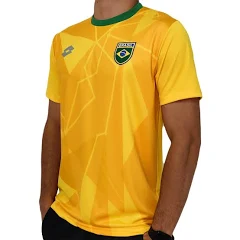

SSFM Esportes


O futsal, também conhecido como futebol de salão, é um esporte coletivo que nasceu na década de 1930 no Uruguai. A sua criação é atribuída ao professor Juan Carlos Ceriani, que buscava adaptar o futebol tradicional para ser jogado em espaços menores e em ambientes fechados, como quadras de esportes. A modalidade se espalhou rapidamente pela América do Sul, especialmente no Brasil, onde ganhou popularidade e desenvolveu uma identidade própria
Para acessar mais informações, siga os links

Chuteira Futsal Umbro X-Comfort Unissex - Branco+Laranja
Preço:R$229,90
Tamanhos disponíveis: 37, 38, 39, 40, 41, 42, 43 e 44
Bola Futsal Penalty Max 100 Termotec Xxi
Preço:R$249,99
Tamanho: único
Indicada para categoria Sub 11 / Sub 9 de futsal.
A Bola de Futsal Penalty Max 100 Termotec XXI é recomendada para competições e categorias SUB 11 / SUB 9 e está presente na Federação Catarinense de Futsal ( FCFS ), Federação Paranaense de Futsal ( FPFS ), Federação Paulista de Futsal ( FPFS ) a e na Liga Gaúcha de Futsal ( LGF ). Permitindo maciez perfeita durante os toques, a criançada poderá se divertir muito durante os treinos ou campeonatos. Essa bola de futsal foi pensando com todo cuidado para que a molecada aproveite de maneira correta o que futsal pode proporcionar. Garanta a sua e estufe as redes desde cedo.
Kit 02 Shorts Preto Ideal Para Futsal, Academia, Corrida, Caminhada + 02 Pares De Meião Futebol Atoalhado em Algodão
Preço:R$ 219,99
Tamanhos disponíveis: P, M, G e GG
Camisa da Seleção Brasileira de Futsal
Preço:R$250,00
Tamanhos disponíveis: M, G, GG e XGG